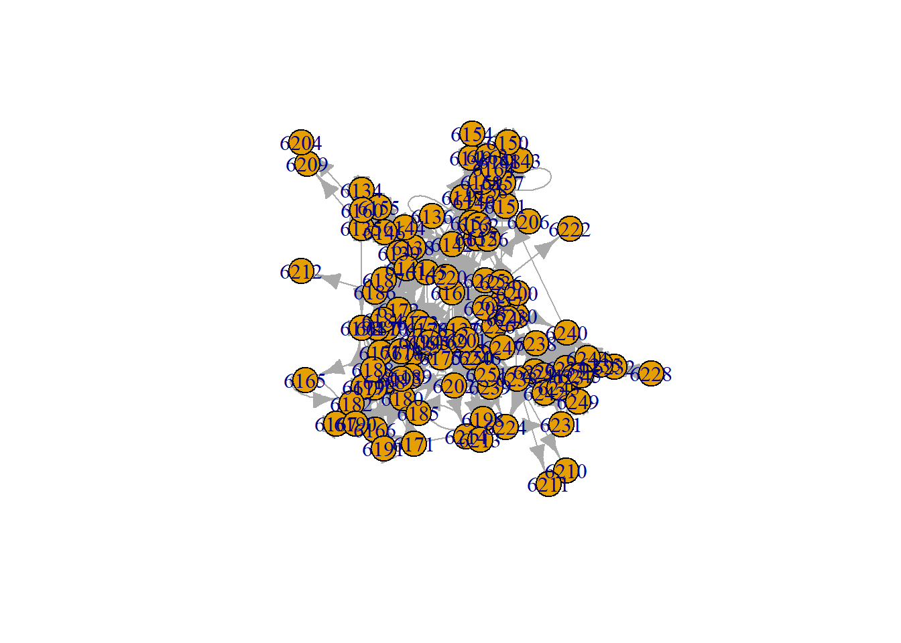

Wave 1
#Only wave 1
w1 <- droplevels(subset(survey, wave == 1))
#Now only friendships
w1_soc <- dplyr::select(w1, c(id_p, a1_0101:a1_0110))
head(w1_soc)
## # A tibble: 6 × 11
## id_p a1_0101 a1_0102 a1_0103 a1_0104 a1_0105 a1_0106 a1_0107 a1_0108 a1_0109
## <dbl> <dbl> <dbl> <dbl> <dbl> <dbl> <dbl> <dbl> <dbl> <dbl>
## 1 6134 6155 6135 6146 6160 NA NA NA NA NA
## 2 6135 6134 6139 6160 6155 6145 6146 6209 6192 NA
## 3 6137 6142 6152 6161 6194 6178 6185 6198 6202 6205
## 4 6138 6144 6136 6145 6155 6146 6141 6172 6187 6139
## 5 6139 6146 6145 6155 6160 6172 NA NA NA NA
## 6 6140 6159 6162 6163 6158 6136 6156 6161 6152 6147
## # ℹ 1 more variable: a1_0110 <dbl>
w1_soc$id_p <- as.factor(w1_soc$id_p)
#To long format
w1soclong <- reshape(data = w1_soc, direction = "long"
, timevar = "nomination1:10"
, times = names(w1_soc)[2:11]
, idvar = "id_p"
, v.names = "receiver"
, varying = 2:11
, new.row.names = 1:870
)
## Warning: Setting row names on a tibble is deprecated.
## Setting row names on a tibble is deprecated.
## Setting row names on a tibble is deprecated.
## Setting row names on a tibble is deprecated.
## Setting row names on a tibble is deprecated.
## Setting row names on a tibble is deprecated.
## Setting row names on a tibble is deprecated.
## Setting row names on a tibble is deprecated.
## Setting row names on a tibble is deprecated.
## Setting row names on a tibble is deprecated.
#Only sender + receiver. Then I'll have an edge list
w1edgelist <- dplyr::select(w1soclong, c(id_p, receiver))
w1edgelist$receiver <- as.character(w1edgelist$receiver)
w1edgelist$id_p <- as.character(w1edgelist$id_p)
head(w1edgelist)
## # A tibble: 6 × 2
## id_p receiver
## <chr> <chr>
## 1 6134 6155
## 2 6135 6134
## 3 6137 6142
## 4 6138 6144
## 5 6139 6146
## 6 6140 6159
summary(w1edgelist)
## id_p receiver
## Length:870 Length:870
## Class :character Class :character
## Mode :character Mode :character
w1edgelistnona <- droplevels(w1edgelist[-which(is.na(w1edgelist$receiver) == TRUE),]) #removing the unused nomination opportunities
summary(w1edgelistnona)
## id_p receiver
## Length:614 Length:614
## Class :character Class :character
## Mode :character Mode :character
require(igraph)
## Loading required package: igraph
## Warning: package 'igraph' was built under R version 4.5.3
##
## Attaching package: 'igraph'
## The following objects are masked from 'package:lubridate':
##
## %--%, union
## The following objects are masked from 'package:dplyr':
##
## as_data_frame, groups, union
## The following objects are masked from 'package:purrr':
##
## compose, simplify
## The following object is masked from 'package:tidyr':
##
## crossing
## The following object is masked from 'package:tibble':
##
## as_data_frame
## The following objects are masked from 'package:ape':
##
## degree, edges, mst, ring
## The following objects are masked from 'package:sna':
##
## betweenness, bonpow, closeness, components, degree, dyad.census,
## evcent, hierarchy, is.connected, neighborhood, triad.census
## The following objects are masked from 'package:network':
##
## %c%, %s%, add.edges, add.vertices, delete.edges, delete.vertices,
## get.edge.attribute, get.edges, get.vertex.attribute, is.bipartite,
## is.directed, list.edge.attributes, list.vertex.attributes,
## set.edge.attribute, set.vertex.attribute
## The following objects are masked from 'package:stats':
##
## decompose, spectrum
## The following object is masked from 'package:base':
##
## union
w1graph <- graph_from_data_frame(w1edgelistnona)
w1adjmat <- as_adjacency_matrix(w1graph)
plot(w1graph)

#Continuing with the matrix
class(w1adjmat)
## [1] "dgCMatrix"
## attr(,"package")
## [1] "Matrix"
#Alternative way of making a matrix?
matw1 <- matrix(0,nrow=length(composition$id_p)-5,ncol=length(composition$id_p)-5) # generate empty adjacency matrix